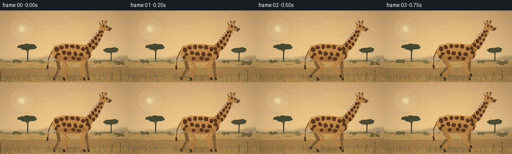
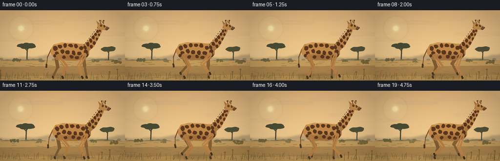
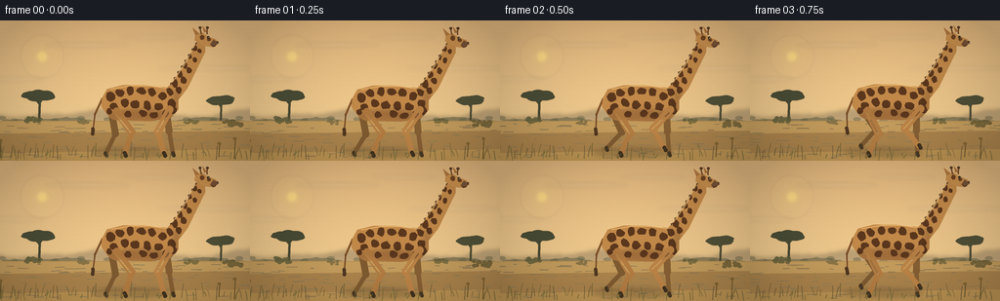
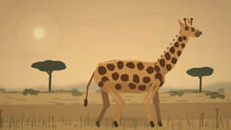
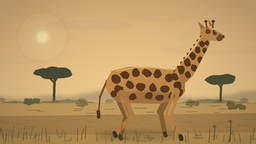
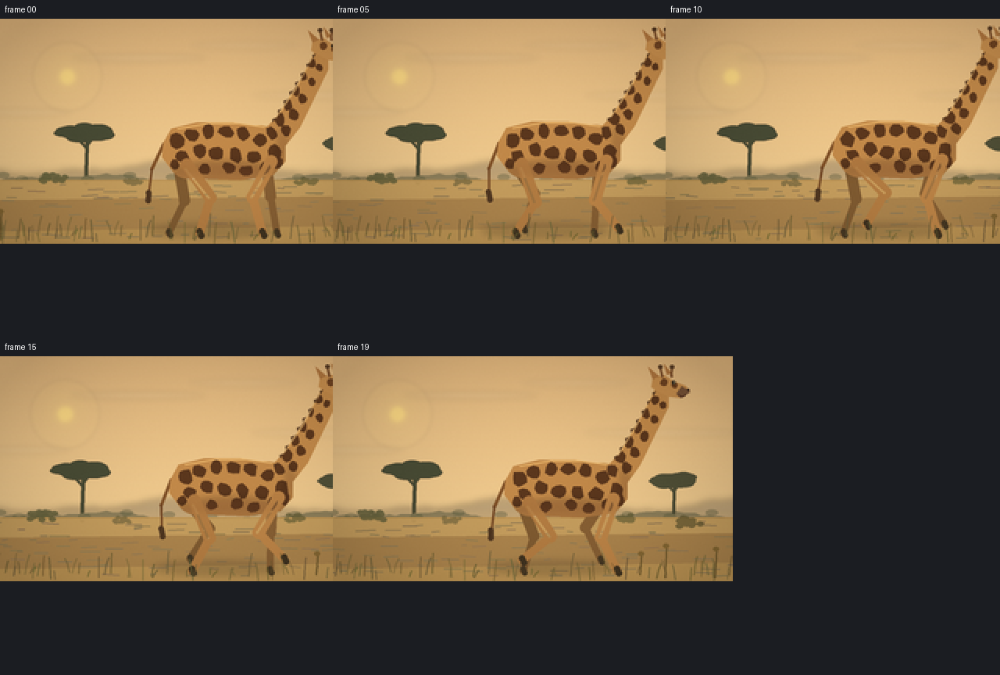
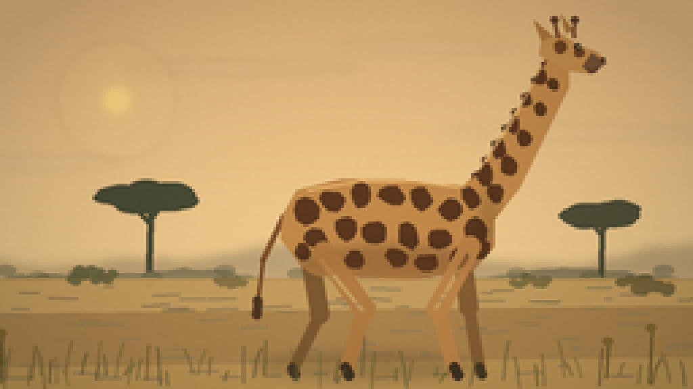
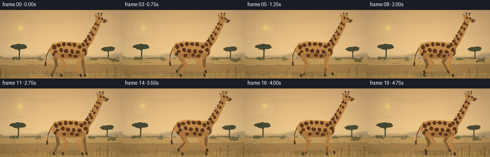

CODING AGENTS AS PIXEL WORLD MODELS
traex/DeepSeek-V4.1-Flash · instance_preservation_0010
点击播放 · 原生 RGB 像素
此结果可播放，但该运行尚未通过最终提交审核。页面展示不代表评测通过。
逐轮保存的候选
回放视频、检查图与代码变化。
每份候选均可单独播放。实际图片检查记录在下方工具轨迹中。
候选 01播放与检查图
点击播放 · 原生 RGB 像素


展开代码变化
--- 上一保存版本
+++ 本次保存版本
@@ -0,0 +1,461 @@
+from __future__ import annotations
+
+import math
+import random
+from pathlib import Path
+
+import cv2
+import numpy as np
+from PIL import Image, ImageChops, ImageDraw, ImageFilter
+
+import artifact_io
+
+
+W, H, SCALE = 256, 144, 4
+RW, RH = W * SCALE, H * SCALE
+ROOT = Path(__file__).resolve().parent
+RNG = random.Random(20261110)
+
+
+def pts(values):
+ return [(round(x * SCALE), round(y * SCALE)) for x, y in values]
+
+
+def box(values):
+ return tuple(round(v * SCALE) for v in values)
+
+
+def rgba(color, alpha=255):
+ if len(color) == 4:
+ return color
+ return (*color, alpha)
+
+
+def capsule(draw, a, b, radius, fill):
+ ax, ay = (round(a[0] * SCALE), round(a[1] * SCALE))
+ bx, by = (round(b[0] * SCALE), round(b[1] * SCALE))
+ r = max(1, round(radius * SCALE))
+ draw.line((ax, ay, bx, by), fill=fill, width=2 * r, joint="curve")
+ draw.ellipse((ax - r, ay - r, ax + r, ay + r), fill=fill)
+ draw.ellipse((bx - r, by - r, bx + r, by + r), fill=fill)
+
+
+def irregular_spot(draw, cx, cy, rx, ry, angle, color, wobble=0.16):
+ points = []
+ for index in range(9):
+ theta = math.tau * index / 9
+ radius = 1.0 + RNG.uniform(-wobble, wobble)
+ x = math.cos(theta) * rx * radius
+ y = math.sin(theta) * ry * radius
+ xr = x * math.cos(angle) - y * math.sin(angle)
+ yr = x * math.sin(angle) + y * math.cos(angle)
+ points.append((round((cx + xr) * SCALE), round((cy + yr) * SCALE)))
+ draw.polygon(points, fill=color)
+
+
+def vertical_gradient(top, bottom):
+ rows = np.linspace(0, 1, RH, dtype=np.float32)[:, None, None]
+ top_arr = np.asarray(top, dtype=np.float32)[None, None, :]
+ bottom_arr = np.asarray(bottom, dtype=np.float32)[None, None, :]
+ image = top_arr * (1 - rows) + bottom_arr * rows
+ return Image.fromarray(np.repeat(image.astype(np.uint8), RW, axis=1), "RGB")
+
+
+def hill_polygon(base_y, amplitude, phase, color, layer_seed):
+ rng = random.Random(layer_seed)
+ points = [(0, H + 2)]
+ for x in range(0, W + 5, 4):
+ y = (
+ base_y
+ + amplitude * math.sin(x * 0.040 + phase)
+ + amplitude * 0.42 * math.sin(x * 0.093 + phase * 1.7)
+ + rng.uniform(-0.7, 0.7)
+ )
+ points.append((x, y))
+ points.extend([(W, H + 2)])
+ return pts(points)
+
+
+def make_acacia(layer, x, ground_y, height, width, color, seed, blur=0):
+ rng = random.Random(seed)
+ draw = ImageDraw.Draw(layer)
+ top = ground_y - height
+ capsule(draw, (x, ground_y), (x + width * 0.025, top + height * 0.20), 1.1, rgba(color))
+ capsule(draw, (x + width * 0.01, top + height * 0.42), (x - width * 0.12, top + height * 0.26), 0.65, rgba(color))
+ capsule(draw, (x + width * 0.02, top + height * 0.36), (x + width * 0.15, top + height * 0.18), 0.7, rgba(color))
+ capsule(draw, (x, top + height * 0.27), (x - width * 0.24, top + height * 0.17), 0.48, rgba(color))
+ capsule(draw, (x, top + height * 0.24), (x + width * 0.25, top + height * 0.14), 0.45, rgba(color))
+
+ crown_y = top + height * 0.15
+ for index in range(34):
+ angle = math.tau * index / 34
+ rx = width * (0.23 + 0.08 * rng.random())
+ ry = height * (0.045 + 0.025 * rng.random())
+ cx = x + math.cos(angle) * rx
+ cy = crown_y + math.sin(angle) * ry + rng.uniform(-1.2, 1.2)
+ rw = rng.uniform(4.0, 8.0)
+ rh = rng.uniform(1.6, 3.3)
+ draw.ellipse(box((cx - rw, cy - rh, cx + rw, cy + rh)), fill=rgba(color))
+ for _ in range(12):
+ cx = x + rng.uniform(-width * 0.20, width * 0.20)
+ cy = crown_y + rng.uniform(-height * 0.055, height * 0.035)
+ rw = rng.uniform(3.5, 6.0)
+ draw.ellipse(box((cx - rw, cy - 1.5, cx + rw, cy + 1.8)), fill=rgba(color))
+ if blur:
+ layer.alpha_composite(layer.filter(ImageFilter.GaussianBlur(blur * SCALE)))
+
+
+def branch(draw, start, angle, length, width, color, depth, rng):
+ if depth <= 0 or length < 1.2:
+ return
+ end = (start[0] + math.cos(angle) * length, start[1] + math.sin(angle) * length)
+ capsule(draw, start, end, max(0.25, width), rgba(color))
+ branch(draw, end, angle - rng.uniform(0.25, 0.55), length * rng.uniform(0.64, 0.78), width * 0.58, color, depth - 1, rng)
+ branch(draw, end, angle + rng.uniform(0.20, 0.50), length * rng.uniform(0.62, 0.76), width * 0.55, color, depth - 1, rng)
+
+
+def draw_background(scroll, frame):
+ image = vertical_gradient((224, 181, 124), (248, 213, 151)).convert("RGBA")
+
+ # Layered, hazy hills make the horizon feel deep without competing with the animal.
+ far = Image.new("RGBA", (RW, RH), (0, 0, 0, 0))
+ ImageDraw.Draw(far).polygon(hill_polygon(96, 3.5, 0.3, (0, 0, 0), 11), fill=(125, 111, 91, 105))
+ far = far.filter(ImageFilter.GaussianBlur(2.3 * SCALE))
+ image.alpha_composite(far)
+
+ mid = Image.new("RGBA", (RW, RH), (0, 0, 0, 0))
+ ImageDraw.Draw(mid).polygon(hill_polygon(102, 2.1, 2.4, (0, 0, 0), 22), fill=(93, 93, 68, 145))
+ image.alpha_composite(mid)
+
+ # Warm low sun and its atmospheric bloom.
+ glow = Image.new("RGBA", (RW, RH), (0, 0, 0, 0))
+ glow_draw = ImageDraw.Draw(glow)
+ sun_x, sun_y = 43 - scroll * 0.08, 37
+ for radius, alpha in ((25, 22), (17, 35), (10, 70), (5.8, 235)):
+ glow_draw.ellipse(box((sun_x - radius, sun_y - radius, sun_x + radius, sun_y + radius)), fill=(255, 236, 173, alpha))
+ glow = glow.filter(ImageFilter.GaussianBlur(1.2 * SCALE))
+ image.alpha_composite(glow)
+
+ # Soft, stretched cloud bands.
+ clouds = Image.new("RGBA", (RW, RH), (0, 0, 0, 0))
+ cd = ImageDraw.Draw(clouds)
+ for cx, cy, cw, alpha in ((89, 25, 43, 27), (156, 17, 34, 19), (212, 49, 51, 22), (15, 60, 30, 20)):
+ x = cx - scroll * 0.05
+ cd.ellipse(box((x - cw, cy - 2.1, x + cw, cy + 2.1)), fill=(255, 245, 218, alpha))
+ clouds = clouds.filter(ImageFilter.GaussianBlur(1.8 * SCALE))
+ image.alpha_composite(clouds)
+
+ # Distant tree line and acacias.
+ trees = Image.new("RGBA", (RW, RH), (0, 0, 0, 0))
+ make_acacia(trees, 55 - scroll * 0.15, 105, 38, 42, (72, 75, 52, 175), 3, 0.25)
+ make_acacia(trees, 222 - scroll * 0.18, 104, 29, 31, (68, 70, 48, 185), 7, 0.18)
+ td = ImageDraw.Draw(trees)
+ for index in range(12):
+ x = (index * 27 + 14 - scroll * 0.12) % 285 - 12
+ y = 100 + (index % 3) * 1.2
+ td.ellipse(box((x - 4, y - 2, x + 4, y + 2)), fill=(70, 78, 54, 90))
+ image.alpha_composite(trees)
+
+ # Dry ground, with a few broad horizontal bands for a painterly surface.
+ ground = Image.new("RGBA", (RW, RH), (0, 0, 0, 0))
+ gd = ImageDraw.Draw(ground)
+ gd.polygon(pts([(0, 103), (256, 103), (256, 144), (0, 144)]), fill=(185, 145, 83, 255))
+ gd.polygon(pts([(0, 104), (256, 104), (256, 116), (0, 118)]), fill=(199, 158, 93, 230))
+ gd.polygon(pts([(0, 116), (256, 113), (256, 132), (0, 136)]), fill=(169, 128, 73, 230))
+ for index in range(85):
+ x = (index * 19 - scroll * (0.35 + (index % 4) * 0.10) + RNG.uniform(-8, 8)) % 280 - 12
+ y = RNG.uniform(106, 141)
+ length = RNG.uniform(3, 13)
+ tone = (135 + RNG.randrange(34), 98 + RNG.randrange(28), 55 + RNG.randrange(20), RNG.randrange(65, 115))
+ gd.line(pts([(x, y), (x + length, y + RNG.uniform(-0.7, 0.7))]), fill=tone, width=SCALE)
+ image.alpha_composite(ground)
+
+ shrubs = Image.new("RGBA", (RW, RH), (0, 0, 0, 0))
+ sd = ImageDraw.Draw(shrubs)
+ for cx, cy, size, tone in (
+ (34, 104, 1.0, (87, 88, 55, 210)),
+ (85, 106, 0.65, (99, 91, 55, 170)),
+ (196, 105, 0.8, (90, 86, 50, 175)),
+ (238, 108, 1.1, (85, 78, 44, 190)),
+ ):
+ sx = cx - scroll * 0.40
+ for _ in range(17):
+ ox = rng = RNG.uniform(-8, 8) * size
+ oy = RNG.uniform(-4.5, 0.5) * size
+ sd.ellipse(box((sx + ox - 2.2 * size, cy + oy - 1.5 * size, sx + ox + 2.2 * size, cy + oy + 1.5 * size)), fill=tone)
+ image.alpha_composite(shrubs)
+ return image
+
+
+def solve_knee(hip, foot, upper, lower, bend):
+ hx, hy = hip
+ fx, fy = foot
+ dx, dy = fx - hx, fy - hy
+ distance = max(0.01, min(upper + lower - 0.01, math.hypot(dx, dy)))
+ base_angle = math.atan2(dy, dx)
+ along = (upper * upper - lower * lower + distance * distance) / (2 * distance)
+ height = math.sqrt(max(0.01, upper * upper - along * along))
+ mx, my = hx + math.cos(base_angle) * along, hy + math.sin(base_angle) * along
+ return (mx - math.sin(base_angle) * height * bend, my + math.cos(base_angle) * height * bend)
+
+
+def leg_pose(hip, phase, stride, stance_fraction=0.58):
+ p = phase % math.tau
+ stance = math.tau * stance_fraction
+ if p < stance:
+ u = p / stance
+ foot_x = hip[0] + stride * (0.5 - u)
+ foot_y = 137.0
+ else:
+ u = (p - stance) / (math.tau - stance)
+ smooth = 0.5 - 0.5 * math.cos(math.pi * u)
+ foot_x = hip[0] - stride * 0.5 + stride * smooth
+ foot_y = 137.0 - 8.2 * math.sin(math.pi * u)
+ return foot_x, foot_y
+
+
+def draw_giraffe(image, body_x, phase):
+ rng = random.Random(8604)
+ body_center_y = 86 + 0.8 * math.sin(phase * 2.0 + 0.3)
+ xoff = body_x - 127
+ yoff = body_center_y - 86
+ neck_sway = 0.9 * math.sin(phase + 0.5)
+
+ far = Image.new("RGBA", (RW, RH), (0, 0, 0, 0))
+ near = Image.new("RGBA", (RW, RH), (0, 0, 0, 0))
+ body = Image.new("RGBA", (RW, RH), (0, 0, 0, 0))
+ far_d = ImageDraw.Draw(far)
+ near_d = ImageDraw.Draw(near)
+ body_d = ImageDraw.Draw(body)
+
+ hip_far_h = (112 + xoff, 91 + yoff)
+ hip_far_f = (168 + xoff, 88 + yoff)
+ hip_near_h = (118 + xoff, 93 + yoff)
+ hip_near_f = (172 + xoff, 91 + yoff)
+ phases = (phase + math.pi, phase, phase, phase + math.pi)
+ stride = 16.0
+
+ for label, hip, ph, color, target in (
+ ("far_h", hip_far_h, phases[0], (117, 82, 44), far_d),
+ ("far_f", hip_far_f, phases[1], (126, 88, 48), far_d),
+ ):
+ foot = leg_pose(hip, ph, stride * 0.94)
+ knee = solve_knee(hip, foot, 25.5, 23.0, -1 if "h" in label else 1)
+ capsule(target, hip, knee, 3.4, rgba(color))
+ capsule(target, knee, foot, 2.35, rgba(color))
+ capsule(target, (foot[0], foot[1] - 1.0), (foot[0] + 1.0, foot[1] + 1.6), 1.8, (55, 44, 29, 255))
+
+ for label, hip, ph, color, target in (
+ ("near_h", hip_near_h, phases[2], (174, 119, 63), near_d),
+ ("near_f", hip_near_f, phases[3], (185, 128, 68), near_d),
+ ):
+ foot = leg_pose(hip, ph, stride)
+ knee = solve_knee(hip, foot, 26.0, 23.5, -1 if "h" in label else 1)
+ capsule(target, hip, knee, 4.0, rgba(color))
+ capsule(target, knee, foot, 2.65, rgba(color))
+ capsule(target, (foot[0], foot[1] - 1.0), (foot[0] + 1.2, foot[1] + 1.7), 2.0, (49, 39, 26, 255))
+ # A restrained highlight separates the moving near legs from the body.
+ capsule(target, (hip[0] - 0.8, hip[1] + 3), (knee[0] - 0.8, knee[1]), 0.65, (213, 159, 91, 90))
+
+ # Tail, behind the body, with a gentle delayed swing.
+ tail_swing = 2.0 * math.sin(phase - 0.7)
+ tail_top = (103 + xoff, 80 + yoff)
+ tail_mid = (96 + xoff + tail_swing * 0.35, 96 + yoff)
+ tail_end = (95 + xoff + tail_swing, 110 + yoff)
+ capsule(far_d, tail_top, tail_mid, 1.0, (130, 83, 41, 255))
+ capsule(far_d, tail_mid, tail_end, 0.75, (111, 68, 35, 255))
+ capsule(far_d, (tail_end[0] - 0.3, tail_end[1] + 1.0), (tail_end[0] + tail_swing * 0.35, tail_end[1] + 6.0), 1.7, (65, 43, 27, 255))
+
+ # Main silhouette.
+ torso = pts([
+ (103 + xoff, 79 + yoff), (108 + xoff, 70 + yoff), (124 + xoff, 66 + yoff),
+ (148 + xoff, 66 + yoff), (169 + xoff, 69 + yoff), (181 + xoff, 78 + yoff),
+ (181 + xoff, 91 + yoff), (173 + xoff, 100 + yoff), (152 + xoff, 103 + yoff),
+ (124 + xoff, 102 + yoff), (108 + xoff, 96 + yoff), (102 + xoff, 88 + yoff),
+ ])
+ body_d.polygon(torso, fill=(194, 137, 73, 255))
+ body_d.ellipse(box((105 + xoff, 70 + yoff, 132 + xoff, 102 + yoff)), fill=(194, 137, 73, 255))
+ body_d.ellipse(box((148 + xoff, 68 + yoff, 181 + xoff, 101 + yoff)), fill=(194, 137, 73, 255))
+
+ neck = pts([
+ (164 + xoff, 74 + yoff), (175 + xoff, 65 + yoff),
+ (194 + xoff + neck_sway, 45 + yoff), (199 + xoff + neck_sway, 33 + yoff),
+ (207 + xoff + neck_sway, 35 + yoff), (207 + xoff + neck_sway, 43 + yoff),
+ (190 + xoff + neck_sway, 75 + yoff), (177 + xoff, 86 + yoff),
+ ])
+ body_d.polygon(neck, fill=(194, 137, 73, 255))
+
+ hx = 203 + xoff + neck_sway
+ hy = 32 + yoff + 0.45 * math.sin(phase + 0.2)
+ head = pts([
+ (hx - 5, hy - 4), (hx + 2, hy - 6), (hx + 8, hy - 2), (hx + 16, hy + 1),
+ (hx + 19, hy + 5), (hx + 13, hy + 9), (hx + 5, hy + 8), (hx - 1, hy + 5),
+ (hx - 6, hy + 2),
+ ])
+ body_d.polygon(head, fill=(199, 142, 77, 255))
+ # Ears and ossicones.
+ body_d.polygon(pts([(hx - 1, hy - 5), (hx - 8, hy - 11), (hx - 5, hy - 3)]), fill=(176, 118, 62, 255))
+ body_d.polygon(pts([(hx + 4, hy - 6), (hx + 2, hy - 13), (hx + 7, hy - 7)]), fill=(176, 118, 62, 255))
+ capsule(body_d, (hx + 1, hy - 5), (hx - 0.2, hy - 11), 0.8, (126, 80, 43, 255))
+ capsule(body_d, (hx + 7, hy - 5), (hx + 7.2, hy - 11), 0.8, (126, 80, 43, 255))
+ body_d.ellipse(box((hx - 1.7, hy - 12.3, hx + 1.4, hy - 9.8)), fill=(91, 62, 37, 255))
+ body_d.ellipse(box((hx + 5.7, hy - 12.3, hx + 8.8, hy - 9.8)), fill=(91, 62, 37, 255))
+
+ body_mask = body.getchannel("A")
+ spots = Image.new("RGBA", (RW, RH), (0, 0, 0, 0))
+ spot_d = ImageDraw.Draw(spots)
+ spot_color = (91, 55, 29, 255)
+
+ # Torso spots use irregular polygons and varied orientations.
+ torso_spots = [
+ (112, 78, 4.4, 5.2, -0.3), (121, 74, 4.7, 4.0, 0.5), (132, 72, 3.7, 4.8, -0.1),
+ (143, 72, 4.9, 3.8, 0.2), (154, 73, 4.0, 4.6, -0.5), (165, 77, 4.3, 4.2, 0.3),
+ (174, 85, 4.1, 5.0, -0.1), (161, 88, 4.6, 4.1, 0.4), (149, 87, 3.8, 4.8, -0.2),
+ (137, 86, 4.8, 4.2, 0.1), (126, 84, 4.0, 4.6, -0.5), (115, 88, 4.4, 3.8, 0.3),
+ (145, 95, 4.0, 3.7, 0.5), (156, 97, 4.5, 3.4, -0.2), (168, 95, 3.4, 4.1, 0.2),
+ (129, 96, 3.8, 3.4, -0.4), (176, 92, 3.0, 4.2, 0.2), (110, 93, 3.1, 3.3, 0.2),
+ ]
+ for cx, cy, rx, ry, ang in torso_spots:
+ irregular_spot(spot_d, cx + xoff, cy + yoff, rx, ry, ang, spot_color)
+
+ # Neck spots are smaller and more vertically elongated.
+ neck_spots = [
+ (172, 76, 3.2, 4.4, -0.35), (178, 69, 3.5, 4.8, -0.28), (184, 62, 3.2, 4.3, -0.25),
+ (189, 55, 3.0, 4.2, -0.20), (194, 49, 2.8, 3.8, -0.14), (198, 43, 2.7, 3.2, -0.08),
+ (185, 74, 3.0, 3.8, -0.25), (191, 67, 3.1, 3.7, -0.18), (197, 59, 2.6, 3.4, -0.1),
+ (201, 50, 2.2, 3.0, -0.05), (203, 42, 2.1, 2.5, 0.0),
+ ]
+ for cx, cy, rx, ry, ang in neck_spots:
+ irregular_spot(spot_d, cx + xoff + neck_sway * ((cy - 45) / 30), cy + yoff, rx, ry, ang, spot_color)
+
+ # Head markings.
+ irregular_spot(spot_d, hx + 2, hy - 1, 2.4, 2.6, 0.2, (111, 67, 33, 255), 0.12)
+ irregular_spot(spot_d, hx + 9, hy + 1, 2.0, 1.8, -0.1, (111, 67, 33, 255), 0.12)
+ spots.putalpha(ImageChops.multiply(spots.getchannel("A"), body_mask))
+ body.alpha_composite(spots)
+
+ shade = Image.new("RGBA", (RW, RH), (0, 0, 0, 0))
+ shd = ImageDraw.Draw(shade)
+ shd.ellipse(box((107 + xoff, 91 + yoff, 177 + xoff, 107 + yoff)), fill=(92, 52, 29, 78))
+ shd.polygon(pts([
+ (177 + xoff, 69 + yoff), (184 + xoff, 79 + yoff), (177 + xoff, 99 + yoff),
+ (167 + xoff, 102 + yoff), (176 + xoff, 87 + yoff),
+ ]), fill=(88, 51, 28, 56))
+ shade = shade.filter(ImageFilter.GaussianBlur(2.0 * SCALE))
+ shade.putalpha(ImageChops.multiply(shade.getchannel("A"), body_mask))
+ body.alpha_composite(shade)
+
+ # Backlit rim on the upper contour.
+ rim = Image.new("RGBA", (RW, RH), (0, 0, 0, 0))
+ rd = ImageDraw.Draw(rim)
+ rd.line(pts([(112 + xoff, 70 + yoff), (132 + xoff, 66.5 + yoff), (151 + xoff, 66.5 + yoff), (168 + xoff, 69 + yoff)]), fill=(255, 205, 125, 165), width=1 * SCALE)
+ rd.line(pts([(175 + xoff, 65 + yoff), (189 + xoff + neck_sway, 50 + yoff), (199 + xoff + neck_sway, 35 + yoff)]), fill=(255, 205, 125, 145), width=1 * SCALE)
+ rim.putalpha(ImageChops.multiply(rim.getchannel("A"), body_mask))
+ body.alpha_composite(rim)
+
+ # Mane follows the back of the neck.
+ mane = Image.new("RGBA", (RW, RH), (0, 0, 0, 0))
+ md = ImageDraw.Draw(mane)
+ for index in range(9):
+ u = index / 8
+ mx = 171 + xoff + u * 27 + neck_sway * u
+ my = 70 + yoff - u * 35
+ md.polygon(pts([(mx - 1.2, my), (mx + 1.0, my - 1.0), (mx - 0.8, my + 2.0)]), fill=(82, 53, 31, 230))
+ image.alpha_composite(far)
+ image.alpha_composite(body)
+ image.alpha_composite(mane)
+
+ # Head details are drawn after the body shading.
+ details = Image.new("RGBA", (RW, RH), (0, 0, 0, 0))
+ dd = ImageDraw.Draw(details)
+ dd.ellipse(box((hx + 7.0, hy - 2.3, hx + 9.5, hy + 0.2)), fill=(44, 34, 23, 255))
+ dd.ellipse(box((hx + 8.0, hy - 1.6, hx + 9.1, hy - 0.5)), fill=(238, 213, 154, 255))
+ dd.ellipse(box((hx + 8.15, hy - 1.45, hx + 8.8, hy - 0.8)), fill=(35, 28, 20, 255))
+ dd.polygon(pts([
+ (hx + 13.5, hy + 1.2), (hx + 19, hy + 5), (hx + 13, hy + 9), (hx + 10, hy + 6.2)
+ ]), fill=(119, 82, 54, 255))
+ dd.ellipse(box((hx + 16.7, hy + 3.0, hx + 18.5, hy + 4.2)), fill=(64, 44, 31, 255))
+ dd.arc(box((hx + 11.2, hy + 4.0, hx + 16.3, hy + 8.4)), 12, 156, fill=(92, 56, 36, 255), width=SCALE)
+ image.alpha_composite(details)
+ image.alpha_composite(near)
+
+
+def foreground(image, scroll, frame):
+ layer = Image.new("RGBA", (RW, RH), (0, 0, 0, 0))
+ draw = ImageDraw.Draw(layer)
+ rng = random.Random(992)
+ for index in range(65):
+ x = (index * 5.3 - scroll * 1.55 + rng.uniform(-4, 4)) % 276 - 10
+ base_y = 139 + rng.uniform(-1, 5)
+ height = rng.uniform(3, 15)
+ lean = rng.uniform(-3.2, 3.2)
+ alpha = rng.randrange(95, 185)
+ color = (83 + rng.randrange(20), 77 + rng.randrange(20), 39 + rng.randrange(17), alpha)
+ draw.line(pts([(x, base_y), (x + lean * 0.4, base_y - height * 0.58), (x + lean, base_y - height)]), fill=color, width=SCALE)
+ # A couple of seed heads near the lower edges.
+ for x, y, h in ((8, 142, 18), (248, 142, 20), (232, 140, 13)):
+ xx = (x - scroll * 1.25) % 272 - 8
+ draw.line(pts([(xx, y), (xx + 1, y - h)]), fill=(91, 74, 34, 225), width=SCALE)
+ draw.ellipse(box((xx - 1.4, y - h - 2.2, xx + 2.3, y - h + 0.7)), fill=(117, 91, 43, 220))
+ image.alpha_composite(layer)
+
+
+def atmosphere(image, frame):
+ # Golden haze, vignette, and a tiny amount of coherent film grain.
+ haze = Image.new("RGBA", (RW, RH), (0, 0, 0, 0))
+ hd = ImageDraw.Draw(haze)
+ hd.polygon(pts([(0, 97), (256, 99), (256, 144), (0, 144)]), fill=(255, 193, 102, 20))
+ haze = haze.filter(ImageFilter.GaussianBlur(3 * SCALE))
+ image.alpha_composite(haze)
+
+ arr = np.asarray(image.convert("RGB"), dtype=np.float32)
+ yy, xx = np.mgrid[0:RH, 0:RW]
+ nx = (xx - RW * 0.5) / (RW * 0.5)
+ ny = (yy - RH * 0.52) / (RH * 0.52)
+ vignette = np.clip(1.0 - 0.13 * (nx * nx + ny * ny * 0.7), 0.82, 1.0)[..., None]
+ arr *= vignette
+ rng = np.random.default_rng(101 + frame)
+ grain = rng.normal(0, 1.55, (RH, RW, 1))
+ arr = np.clip(arr + grain, 0, 255).astype(np.uint8)
+ return Image.fromarray(arr, "RGB")
+
+
+def render_frame(frame):
+ t = frame / 4.0
+ phase = math.tau * 0.36 * t
+ scroll = 1.15 * frame
+ body_x = 128.5 + 0.32 * frame
+
+ image = draw_background(scroll, frame)
+ shadow = Image.new("RGBA", (RW, RH), (0, 0, 0, 0))
+ sd = ImageDraw.Draw(shadow)
+ shadow_x = body_x + 4
+ sd.ellipse(box((shadow_x - 39, 131, shadow_x + 43, 140)), fill=(61, 50, 33, 65))
+ shadow = shadow.filter(ImageFilter.GaussianBlur(2.2 * SCALE))
+ image.alpha_composite(shadow)
+
+ draw_giraffe(image, body_x, phase)
+ foreground(image, scroll, frame)
+ image = atmosphere(image, frame)
+ return np.asarray(image.resize((W, H), Image.Resampling.LANCZOS), dtype=np.uint8)
+
+
+def main():
+ frames = np.stack([render_frame(frame) for frame in range(20)])
+ artifact_io.save(frames, ROOT)
+
+ # A playable MP4 is useful outside the bundled frame player.
+ writer = cv2.VideoWriter(
+ str(ROOT / "video.mp4"),
+ cv2.VideoWriter_fourcc(*"mp4v"),
+ 4.0,
+ (W, H),
+ )
+ if writer.isOpened():
+ for frame in frames:
+ writer.write(cv2.cvtColor(frame, cv2.COLOR_RGB2BGR))
+ writer.release()
+
+
+if __name__ == "__main__":
+ main()
候选 02播放与检查图
点击播放 · 原生 RGB 像素

展开代码变化
--- 上一保存版本
+++ 本次保存版本
@@ -131,8 +131,8 @@
glow = Image.new("RGBA", (RW, RH), (0, 0, 0, 0))
glow_draw = ImageDraw.Draw(glow)
sun_x, sun_y = 43 - scroll * 0.08, 37
- for radius, alpha in ((25, 22), (17, 35), (10, 70), (5.8, 235)):
- glow_draw.ellipse(box((sun_x - radius, sun_y - radius, sun_x + radius, sun_y + radius)), fill=(255, 236, 173, alpha))
+ for radius, alpha in ((22, 18), (14, 28), (8, 55), (4.8, 220)):
+ glow_draw.ellipse(box((sun_x - radius, sun_y - radius, sun_x + radius, sun_y + radius)), fill=(255, 220, 132, alpha))
glow = glow.filter(ImageFilter.GaussianBlur(1.2 * SCALE))
image.alpha_composite(glow)
@@ -278,15 +278,15 @@
body_d.ellipse(box((148 + xoff, 68 + yoff, 181 + xoff, 101 + yoff)), fill=(194, 137, 73, 255))
neck = pts([
- (164 + xoff, 74 + yoff), (175 + xoff, 65 + yoff),
- (194 + xoff + neck_sway, 45 + yoff), (199 + xoff + neck_sway, 33 + yoff),
- (207 + xoff + neck_sway, 35 + yoff), (207 + xoff + neck_sway, 43 + yoff),
- (190 + xoff + neck_sway, 75 + yoff), (177 + xoff, 86 + yoff),
+ (164 + xoff, 74 + yoff), (175 + xoff, 63 + yoff),
+ (190 + xoff + neck_sway, 39 + yoff), (199 + xoff + neck_sway, 21 + yoff),
+ (208 + xoff + neck_sway, 23 + yoff), (208 + xoff + neck_sway, 32 + yoff),
+ (190 + xoff + neck_sway, 69 + yoff), (177 + xoff, 86 + yoff),
])
body_d.polygon(neck, fill=(194, 137, 73, 255))
hx = 203 + xoff + neck_sway
- hy = 32 + yoff + 0.45 * math.sin(phase + 0.2)
+ hy = 18 + yoff + 0.45 * math.sin(phase + 0.2)
head = pts([
(hx - 5, hy - 4), (hx + 2, hy - 6), (hx + 8, hy - 2), (hx + 16, hy + 1),
(hx + 19, hy + 5), (hx + 13, hy + 9), (hx + 5, hy + 8), (hx - 1, hy + 5),
@@ -320,10 +320,10 @@
# Neck spots are smaller and more vertically elongated.
neck_spots = [
- (172, 76, 3.2, 4.4, -0.35), (178, 69, 3.5, 4.8, -0.28), (184, 62, 3.2, 4.3, -0.25),
- (189, 55, 3.0, 4.2, -0.20), (194, 49, 2.8, 3.8, -0.14), (198, 43, 2.7, 3.2, -0.08),
- (185, 74, 3.0, 3.8, -0.25), (191, 67, 3.1, 3.7, -0.18), (197, 59, 2.6, 3.4, -0.1),
- (201, 50, 2.2, 3.0, -0.05), (203, 42, 2.1, 2.5, 0.0),
+ (172, 73, 3.2, 4.2, -0.35), (177, 64, 3.4, 4.6, -0.28), (182, 54, 3.2, 4.3, -0.25),
+ (187, 45, 3.0, 4.1, -0.20), (192, 36, 2.8, 3.7, -0.14), (198, 28, 2.6, 3.1, -0.08),
+ (181, 71, 3.0, 3.7, -0.25), (186, 61, 3.0, 3.7, -0.18), (192, 51, 2.6, 3.4, -0.1),
+ (198, 40, 2.2, 3.0, -0.05), (203, 31, 2.1, 2.5, 0.0),
]
for cx, cy, rx, ry, ang in neck_spots:
irregular_spot(spot_d, cx + xoff + neck_sway * ((cy - 45) / 30), cy + yoff, rx, ry, ang, spot_color)
@@ -349,7 +349,7 @@
rim = Image.new("RGBA", (RW, RH), (0, 0, 0, 0))
rd = ImageDraw.Draw(rim)
rd.line(pts([(112 + xoff, 70 + yoff), (132 + xoff, 66.5 + yoff), (151 + xoff, 66.5 + yoff), (168 + xoff, 69 + yoff)]), fill=(255, 205, 125, 165), width=1 * SCALE)
- rd.line(pts([(175 + xoff, 65 + yoff), (189 + xoff + neck_sway, 50 + yoff), (199 + xoff + neck_sway, 35 + yoff)]), fill=(255, 205, 125, 145), width=1 * SCALE)
+ rd.line(pts([(175 + xoff, 63 + yoff), (187 + xoff + neck_sway, 45 + yoff), (199 + xoff + neck_sway, 22 + yoff)]), fill=(255, 205, 125, 145), width=1 * SCALE)
rim.putalpha(ImageChops.multiply(rim.getchannel("A"), body_mask))
body.alpha_composite(rim)
@@ -358,8 +358,8 @@
md = ImageDraw.Draw(mane)
for index in range(9):
u = index / 8
- mx = 171 + xoff + u * 27 + neck_sway * u
- my = 70 + yoff - u * 35
+ mx = 170 + xoff + u * 29 + neck_sway * u
+ my = 70 + yoff - u * 47
md.polygon(pts([(mx - 1.2, my), (mx + 1.0, my - 1.0), (mx - 0.8, my + 2.0)]), fill=(82, 53, 31, 230))
image.alpha_composite(far)
image.alpha_composite(body)
候选 03播放与检查图
候选 04播放与检查图
点击播放 · 原生 RGB 像素


展开代码变化
--- 上一保存版本
+++ 本次保存版本
@@ -147,8 +147,8 @@
# Distant tree line and acacias.
trees = Image.new("RGBA", (RW, RH), (0, 0, 0, 0))
- make_acacia(trees, 55 - scroll * 0.15, 105, 38, 42, (72, 75, 52, 175), 3, 0.25)
- make_acacia(trees, 222 - scroll * 0.18, 104, 29, 31, (68, 70, 48, 185), 7, 0.18)
+ make_acacia(trees, 40 - scroll * 0.15, 105, 33, 35, (72, 75, 52, 175), 3, 0.25)
+ make_acacia(trees, 226 - scroll * 0.18, 104, 26, 28, (68, 70, 48, 185), 7, 0.18)
td = ImageDraw.Draw(trees)
for index in range(12):
x = (index * 27 + 14 - scroll * 0.12) % 285 - 12
可观测工具轨迹
实际执行的命令与返回图片。
命令 1exit 0
/bin/bash -c "pwd && rg --files -g '"'!*__pycache__*'"' -g '"'!*.pyc'"' | sed -n '1,200p'"
命令 2exit 0
/bin/bash -c "printf '%s\\n' '--- prompt.txt ---'; sed -n '1,240p' prompt.txt; printf '%s\\n' '--- GENERATION_RULES.md ---'; sed -n '1,300p' GENERATION_RULES.md; printf '%s\\n' '--- task_spec.json ---'; sed -n '1,300p' task_spec.json"
命令 3exit 0
/bin/bash -c "find . -maxdepth 2 -type f -printf '%p %s bytes\\n' | sort | sed -n '1,240p'"
命令 4exit 0
/bin/bash -c "command -v ffmpeg || true; command -v ffprobe || true; command -v convert || true; command -v python3 || true; python3 - <<'PY' mods=['PIL','numpy','cv2','imageio','moviepy','torch','diffusers'] for m in mods: try: x=__import__(m); print(m, getattr(x,'__version__','ok')) except Exception as e: print(m, 'MISSING', type(e).__name__) PY"
命令 5exit 0
/bin/bash -c "sed -n '1,260p' artifact_io.py"
命令 6exit 0
/bin/bash -c "sed -n '1,260p' player_template.html"
命令 7exit 0
/bin/bash -c 'python3 generate.py'
命令 8exit 0
/bin/bash -c 'python3 generate.py && ffprobe -v error -show_entries stream=codec_name,width,height,r_frame_rate,nb_frames -of default=noprint_wrappers=1 video.mp4 2>/dev/null || true'
命令 9exit 1
/bin/bash -c "python3 - <<'PY'
from PIL import Image
for n in (0,7,14,19):
im=Image.open(f'frames/{n:02d}.png')
im.resize((1024,576), Image.Resampling.NEAREST).save(f'/tmp/giraffe_{n:02d}_4x.png')
PY"命令 10exit 0
/bin/bash -c "mkdir -p .tmp && python3 - <<'PY'
from PIL import Image, ImageDraw
import numpy as np
ims=[Image.open(f'frames/{i:02d}.png') for i in range(20)]
for n in (0,5,10,15,19):
ims[n].resize((1024,576), Image.Resampling.NEAREST).save(f'.tmp/frame_{n:02d}_4x.png')
# side-by-side key poses at 2x
out=Image.new('RGB',(1280,864),(27,29,34))
d=ImageDraw.Draw(out)
for j,n in enumerate((0,5,10,15,19)):
x=(j%3)*426; y=(j//3)*432
out.paste(ims[n].resize((512,288),Image.Resampling.NEAREST),(x,y+24))
d.text((x+6,y+6),f'frame {n:02d}',fill='white')
out.save('.tmp/keyposes.png')
PY
python3 - <<'PY'
from PIL import Image
import numpy as np
frames=[np.asarray(Image.open(f'frames/{i:02d}.png'),dtype=np.int16) for i in range(20)]
d=[np.abs(frames[i+1]-frames[i]).mean() for i in range(19)]
print('frame range',frames[0].min(),frames[0].max())
print('mean consecutive pixel delta:',round(float(np.mean(d)),3))
print('deltas:', ' '.join(f'{x:.2f}' for x in d))
print('static pairs:', [i for i,x in enumerate(d) if x < .1])
PY"命令 11exit 0
/bin/bash -c 'python3 generate.py'
命令 12exit 0
/bin/bash -c "python3 - <<'PY'
from pathlib import Path
from PIL import Image
import numpy as np, json
spec=json.loads(Path('task_spec.json').read_text())
frames=np.load('pixels.npz')['pixels']
print('npz',frames.shape,frames.dtype)
print('spec',spec)
print('png_count',len(list(Path('frames').glob('*.png'))))
for p in sorted(Path('frames').glob('*.png')):
im=Image.open(p)
assert im.size==(spec['width'],spec['height']) and im.mode=='RGB', (p, im.size, im.mode)
print('all pngs valid RGB dimensions')
print('index.html',Path('index.html').stat().st_size)
print('video.mp4',Path('video.mp4').stat().st_size)
print('generate.py',Path('generate.py').stat().st_size)
PY
ffprobe -v error -select_streams v:0 -show_entries stream=codec_name,width,height,r_frame_rate,nb_frames,duration -of default=noprint_wrappers=1 video.mp4 2>/dev/null || true
git status --short 2>/dev/null || true"命令 13exit 0
/bin/bash -c "python3 - <<'PY'
import json, re
from pathlib import Path
text=Path('index.html').read_text()
m=re.search(r'const DATA=(\\{.*?\\}),W=',text)
data=json.loads(m.group(1))
print('player:',data['width'],data['height'],data['frames'],data['fps'])
print('deltas:',len(data['deltas']))
print('first payload chars:',len(data['first']))
print('caption:',data['caption'])
PY"视觉工具实际返回图片 1

视觉工具实际返回图片 2

视觉工具实际返回图片 3

视觉工具实际返回图片 4
视觉工具实际返回图片 5

视觉工具实际返回图片 6

视觉工具实际返回图片 7

保存候选 4 份；完成命令 13 次；可验证图片返回 7 张。原始 API 响应与完整日志保留在本地。